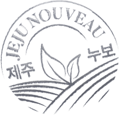

맥주도 음식인데,
그 재료까지 따져보셨나요?
세상에는 두 종류의 맥주가 있습니다. 합성향료로 향을 만든 인공적인 맛의 맥주 제철재료로 자연 본연의 맛을 살린 맥주 여러분이 지금 마시고 있는 맥주는 어떤 맥주인가요?

세상에는 두 종류의 맥주가 있습니다. 합성향료로 향을 만든 인공적인 맛의 맥주 제철재료로 자연 본연의 맛을 살린 맥주 여러분이 지금 마시고 있는 맥주는 어떤 맥주인가요?
맛 좋은 한 끼의 식사가 좋은 재료로부터 나오듯, 맛 좋은 한 잔의 맥주도 좋은 재료가 그 시작입니다. 제주 위트 에일은 세 가지 철학으로 만들었어요.

음식의 맛을 쉽게 내는 '합성조미료'처럼, 맥주의 맛도 '합성향료'로 쉽게 낼 수 있습니다. 수많은 맥주들이 맛과 향을 위해 타협하는 길이죠.

제주 위트 에일은 '합성향료'를 사용하지 않습니다. 자연 재료로 맛을 낸 맥주는 마시는 내내 입안에 은은하고 산뜻한 향을 머금게 합니다. 자연 재료 본연의 맛을 살린 밀맥주의 풍미를 느껴보세요.
세상에서 가장 맛있는 수박은 어떤 수박일까요? 여름에 먹는 제철 수박이겠죠! 모든 식재료에 맛있는 때가 있듯, 맥주의 재료도 맛있는 때가 있습니다.
제주 위트 에일은 제철 수확한 제주 감귤피만 골라 사용합니다. 이를 위해 원산지 출처를 확인, 관리하는 '제주-누보 시스템'을 고수합니다. 캔 뒷면의 '제주-누보' 마크를 확인해보세요!


바다처럼 깊고 감귤밭처럼 여유로운 가장 자연스러운 풍미를 직접 느껴보세요. 제주 위트 에일을 마시는 순간, 당신의 일상엔 늘 제주가 함께합니다.


위트있는 제철단은 제주 위트 에일과 제철 파트너 브랜드와 함께 인공적이지 않은 재료 본연의 맛과 향을 체험하고 경험을 나누는 제주맥주의 비대면 서포터즈 입니다.

모집 기간 내 하단 버튼을 눌러 신청서 작성
*선착순 모집 (신청자 수에 따라 조기 종료될 수 있습니다.)모집: 9/21 ~ 10/4 발표: 10/5 문자 및 이메일 개별 공지 활동기간: 10월 중순부터 약 한 달간
1. 제철키트 & 제철박스 SNS 인증 및 리뷰 2. 활동 기간 중 돌발 미션 수행 시, 추가 혜택
*자세한 활동 내용은 제철단 선정 시 [제철단 가이드]와 함께첫 번째 위트있는 제철 파트너는 위트 있는 농산물로 주목받고 있는 어글리어스입니다.
어글리어스는 낯선 생김새 때문에 시장에 가지 못하고 버려질 뻔한 농산물을 구출하는 못난이 농산물 정기배송 서비스 입니다. 지금 제철단에 신청하고, 땅과 사람 모두에게 이로운 방식으로 자란 친환경 채소박스도 만나보세요. 변화무쌍한 자연을 닮은 생김새와 제주 위트 에일이 전해주는 재료 본연의 맛이 여러분을 찾아갑니다.
선정되신 분들에게는 개별 연락드릴 예정입니다. 감사합니다.
|
Q. 친구나 가족 등 지인과 함께 신청해도 되나요?
네. 친구나 가족 등 지인이 20세 이상 맥주 음용이 가능하면 함께할 수 있습니다. 단, 신청서는 지인도 작성 및 제출해 주셔야 합니다. |
|
Q. 신청 대상자는 누구인가요?
20세 이상 맥주 음용이 가능하면 누구나 가능합니다. 단, 제철단 신청서 작성 과정에서 회원가입 시 반드시 성인인증을 완료해야 합니다. |
|
Q. 팔로워가 많거나 SNS를 활발하게 해야 제철단에 선정될 수 있나요?
아닙니다. 팔로워수나 SNS 활성화 수준은 선정에 영향을 미치지 않습니다. 단, 신청서 작성란에 필수 기재 항목인 SNS 계정을 신규 생성해야 할 수 있습니다. |
제철단은 제주맥주 서포터즈 활동의 일환으로 운영되며, 보건복지부/한국건강증진개발원의 주류광고 준수사항에 따라, 추천·보증 등에 관한 표시·광고 심사지침 (공정거래위원회)을 준수하여 경제적 이해관계를 공개해야 합니다.